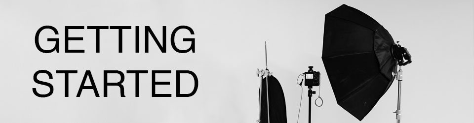

All you need to take up photography is a camera! Any camera will do: your phone camera, a digital camera, a film camera---whatever you can get your hands on will work. However, there is a plethora of other equipment you can use to take your photos to the next level. A tripod will keep your camera level and balanced. Lights, like GVMs, SLs, or fresnels, will give you more creative freedom in creating the light for your space. Light stands will hold these up so you can get exactly the look you envision. Reflectors, dimmers, and other light-altering equipment can further aid in this. Having a nice, open space to use as a studio is also helpful. You can use fabrics or patterns as backdrops.